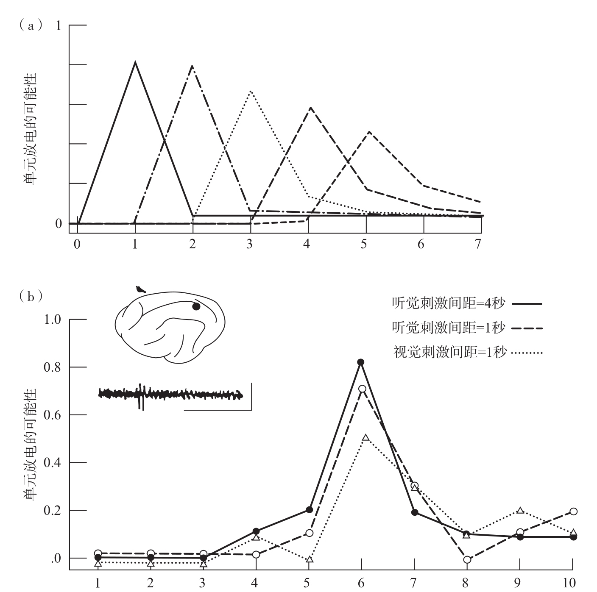

尽管我们并不了解负责数量加工的脑回路，但是对神经网络的模拟却可以被用来推测可能的脑回路组织形式。神经网络模型（neural network models）是一种能够在传统的数字计算机上运行的算法，可用于模拟真实脑回路中可能的运算方式。当然，与真实神经元网络的极度复杂性相比，这种模拟通常已经将其大大简化了。在大多数计算机模型中，每一个神经元被简化为一个数位单元，其活动的输出水平在0和1之间变化。兴奋单元通过不同权重的联结方式激发或抑制临近以及更远的单元，这正是真实神经元间突触联结的模拟物。在每一步中，每个模拟单元都把来自其他单元的输入信息累加起来，而该单元是否被激活则取决于累加的总数是否超出阈限值。这种对真实神经细胞的模拟是粗略的，但是其核心属性被保留了下来：许多简单的数学运算需要多个回路中的神经元同时参与其中。大多数神经生物学家认为，“大规模的并行加工”这一属性是脑能够在短时间内运用相对缓慢和不可靠的生物硬件进行复杂运算的关键。
神经元并行加工（parallel neuronal processing）的方式可以被用于加工数量吗？在巴黎巴斯德研究所的神经生物学家让-皮埃尔·尚热的帮助下，我提出了一个实验性的模拟神经网络模型，是有关动物如何从环境中快速和并行15地提取数量的。我们的模型提出了老鼠和鸽子都可以解决的简单问题：当视网膜接收到不同大小的输入、耳蜗接收到不同频率的声调时，模拟神经网络能否计算出视觉和听觉客体的总数？根据蓄水池模型，每接收一次输入之后向内在累加器添加固定的量，就可以计算出这个数量。困难之处在于，要利用模拟神经网络来完成这个任务，并要得到一个与视觉对象的大小、位置无关，与听觉对象的持续时间无关的数量表征。
我们设计了一个可以把视觉输入的大小进行标准化的回路来解决这个问题。这个网络会探测到对象投射在视网膜上的位置，并为该位置上的每个对象分配数量大致相等的活跃的神经元，而不考虑对象的大小和形状。这个标准化的步骤十分重要，因为它使网络能将每一个对象记为“1”，而不论其大小。就像我们会在后文中看到的那样，对哺乳动物而言，这样的运算很可能是由后顶叶皮层的回路来完成的，它主要负责对物品位置进行表征，而不考虑物品的确切形状和大小。
我们也对听觉刺激做了相似的处理。不考虑接受刺激的时间间隔，听觉输入在一个记忆存储器中进行累加。一旦完成了大小、形状和呈现时间的标准化，估计数量就变得简单了——只需估计标准化的视觉地图上和听觉存储器中总的神经元活动即可。这个总数等同于蓄水池中水的最终高度，它提供了一个合理可靠的估计数值。这个模型的求和操作是由一组单元负责的，这些单元集合了所有潜在的视觉和听觉单元的激活。在特定情况下，这些输出单元只有在接收到的总激活值落入特定范围时才会放电，这个范围因神经元而异。因此，每个模拟神经元就如同一个数量探测器（numerosity detector），只有在看到近似某个数量的对象时才会做出反应（见图1-6）。例如，网络中的一个单元在呈现4个对象时优先做出反应——4个视觉物块，4个声音，或者2个视觉物块加2个声音。这个单元极少对呈现3个或5个对象的情境做出反应，在其他情况下则更不会有反应。所以这个神经元就如同一个针对数量4的抽象探测器。此类探测器可以完整地覆盖整条数轴，每一个探测器对应某一个近似值，而当数量逐渐增大时，对应的精确性就会下降。由于模拟神经元同时处理所有的视觉和听觉输入，数量探测器阵列的反应速度很快——它们能够并行加工整个视网膜上的所有信息，并估算4个物品的集合数量，而不用像计数那样一个一个地数。

“数量探测器”对某一特定数量的输入次数优先做出反应（a）。每条曲线代表各个单元对不同数量项目的反应。值得注意的是，随着输入数量的增加，反应的选择性下降。在20世纪60年代，汤普森及同事对猫进行麻醉，随后在其联合皮层上记录到类似的“数量编码”神经元（b）。图中展示的神经元优先对6个连续事件做出反应，不论是间隔1秒的6次闪光，还是间隔4秒的6个声音。
图1-6 一个包含“数量探测器”的电脑模拟神经网络
资料来源：上图改编自Dehaene & Changeux, 1993；下图改编自Thompson et al., 1970。版权所有©1970 by American Association for the Advancement of Science。
令人惊叹的是，科学家在动物脑内不止一次地发现了上述模型中提出的数量探测神经元。在20世纪60年代，美国加州大学欧文分校的神经科学家理查德·汤普森（Richard Thompson）在他的实验中向猫展示了一系列声音或闪光，并记录下猫的大脑皮层中单个神经元的活动16。一些细胞只有在某一特定数量的事件发生时才会被激活。例如：一个神经元在任意6个事件发生后做出反应，不论是6次闪光、6个短音还是6个长音。感觉通道似乎并不重要——神经元显然只关注数量。不同于电子计算机，它并不以全或无的离散方式来反应，相反，它的激活水平在5个项目之后开始增长，在6个项目时达到顶峰，在更多项目出现时下降。这种反应属性与我们模型中的模拟神经元十分相似。在猫的脑皮层中的这一小块区域内还记录到许多类似的对不同数量做出反应的神经元。
因此，动物脑中可能存在一个特异性的脑区，其作用与鲁滨孙的蓄水池相同。汤普森的研究在1970年刊登在了著名的《科学》杂志上，遗憾的是，这个研究并没有得到后续的关注。我们仍然不知道动物脑中的数量探测神经元是否以我们在模型中所预期的方式联结，或者猫是否会通过其他方式来提取数量。毫无疑问，只有那些敢于运用现代神经元记录工具继续探索动物算术的神经元基础的神经生物学家，才能最终找到答案17。